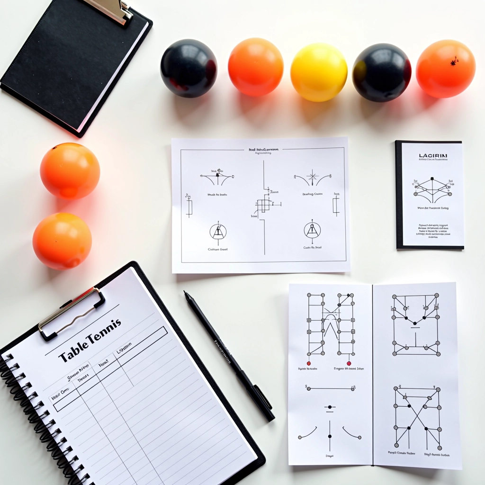
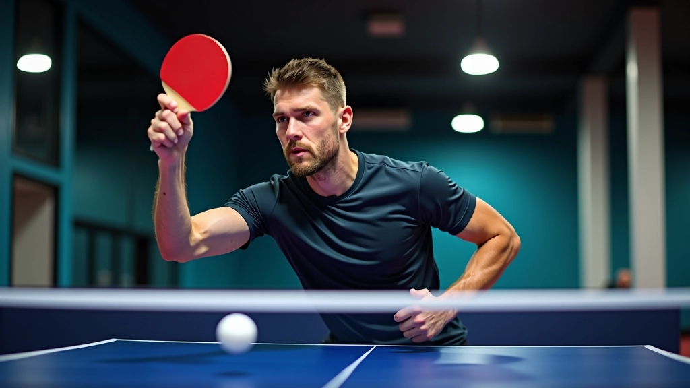
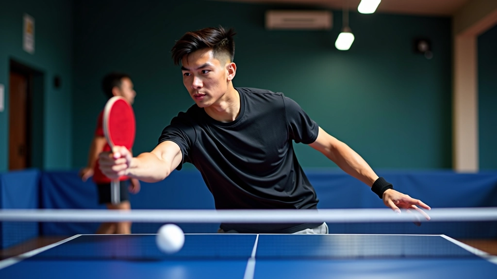

أساسيات تمارين التغذية للمبتدئين والمتوسطين
دليل شامل لفهم كيفية استخدام تمارين التغذية المتعددة لتطوير ردود الأفعال والسرعة...
اقرأ المزيدتعلم كيفية تحسين دقة ضربتك الأمامية باستخدام تمارين التغذية المتعددة بالكرات والتركيز على التحكم والقوة


كتبه
فريق التحرير والمحتوى
كتبه فريق درايف تايبل التحريري، متخصص في تقديم تمارين عملية وسهلة التطبيق لتنس الطاولة.
الضربة الأمامية ليست مجرد حركة عادية — إنها أساس لعبة قوية. عندما تتقن التقنيات المتقدمة، ستلاحظ الفرق فوراً في دقتك وقوتك. الشيء الأساسي هو أن تبدأ بموقف سليم وتركيز على حركة الذراع.
تمارين التغذية المتعددة توفر لك الفرصة للعمل على هذه التقنيات بشكل متكرر. بدلاً من الانتظار بين الكرات، تحصل على تدفق مستمر من الكرات التي تسمح لك بالتركيز على نقطة واحدة في كل مرة. هذا يجعل التحسن أسرع بكثير من التدريب التقليدي.
المفتاح الأول: موقف القدمين يجب أن يكون عريضاً، والكتفان مسترخيان. القوة تأتي من الجسم كله، وليس من الذراع وحدها.

تمارين التغذية المتعددة تختلف عن الاختبارات العادية. المدرب يقدم عدة كرات متتالية بسرعات ومواضع مختلفة، وأنت تتدرب على الاستجابة بسرعة والحفاظ على الدقة. هذا يحاكي ضغط المباراة الحقيقية.
نموذج التمرين البسيط: المدرب يرسل 10 كرات متتالية، وأنت تركز على ضربة واحدة فقط في كل مرة. بعد 3-4 أسابيع من هذا التمرين المنتظم، ستشعر بثقة أكبر بكثير.
المحتوى المقدم هنا لأغراض تعليمية وإعلامية فقط. يجب استشارة مدرب متخصص قبل بدء أي برنامج تدريبي جديد. كل لاعب لديه احتياجات وقدرات مختلفة، والتدريب الصحيح يجب أن يتكيف مع حالتك الشخصية.
لا تتوقع أن تتقن كل شيء في الأسبوع الأول. التدريب يتطلب وقتاً وصبراً. في الشهر الأول، تركز على الحركة الصحيحة والموقف. في الشهر الثاني، تبدأ بزيادة السرعة. في الشهر الثالث، تضيف التنويعات والمواضع المختلفة.
تركيز على موقف الجسم والقبضة الصحيحة. كل ضربة يجب أن تشعر بها في الجسم كله، وليس فقط في الذراع.
المدرب يزيد من سرعة التغذية. أنت تركز على الرد السريع والحفاظ على الدقة حتى مع زيادة الإيقاع.
تمارين بمواضع مختلفة وسرعات متنوعة. الهدف هو محاكاة ظروف المباراة الحقيقية قدر الإمكان.

استكمل تعلمك من خلال هذه المواضيع المرتبطة
دليل شامل لفهم كيفية استخدام تمارين التغذية المتعددة لتطوير ردود الأفعال والسرعة...
اقرأ المزيدبرنامج تدريبي متخصص يركز على تحسين السرعة والتوازن والحركة الجانبية باستخدام تما...
اقرأ المزيد
استراتيجيات فعالة لتنظيم جلسات تدريب جماعية باستخدام تمارين التغذية المتعددة وتط...
اقرأ المزيدتحسين الضربة الأمامية ليس رحلة سريعة، لكنها مجزية جداً. عندما تبدأ برؤية النتائج — دقة أفضل، رد أسرع، ثقة أكبر — ستفهم لماذا يستثمر اللاعبون الجادون في هذا النوع من التدريب.
الشيء المهم هو الاستمرار. التدريب المنتظم أفضل من الجلسات الطويلة المتقطعة. حتى 30 دقيقة في اليوم 4-5 مرات في الأسبوع ستحدث فرقاً واضحاً في غضون شهرين أو ثلاثة أشهر.